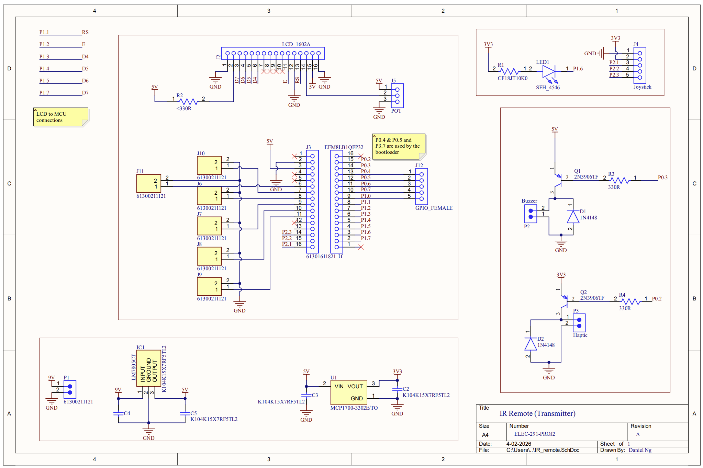

01. Hardware & PCB Architecture
IR Remote Controller
Feb 2026 – Mar 2026Altium Designer // EFM8 MCU // 38kHz IR // Mixed-Signal PCB
- Reliable Comm: Engineered a robust 38kHz IR transmission protocol using hardware timers.
- System Safety: Guaranteed operator safety with zero-latency, interrupt-driven emergency stops.
- UX Design: Enhanced user interaction via active-low PNP haptic and acoustic feedback.
- Autonomous Control: Streamlined complex robotic navigation through custom, intuitive LCD menus.
SYSTEM_VIEW // INTERACTIVE_3D_RENDER



Firmware Snippet // 38 kHz IR Carrier Timing
void Timer2_ISR(void) interrupt 5
{
TF2H = 0;
if (ir_tx_enable) {
IR_LED = !IR_LED; // Toggle output to generate 38 kHz carrier
} else {
IR_LED = 0; // Force LED off between NEC protocol bursts
}
}Formula UBC: Laser Timing Gates Receiver
Sept 2025 – PresentAltium Designer // ESP32-C3 // LiPo PowerPath // Photodiode TIA // 2.4 GHz Wireless
- System Architecture: Designed a modular receiver PCB for laser-based lap timing, separating USB-C power, ESP32 control, and optical analog front-end circuitry across hierarchical schematic sheets.
- Power Management: Implemented a 1S LiPo power subsystem using a BQ24074 charger/PowerPath IC, USB-C input, battery temperature-sense option, and TPS63001 buck-boost regulation for a stable 3.3 V system rail.
- Optical Front End: Built a BPW34 photodiode array feeding an OPA380 transimpedance amplifier, using a 1.65 V virtual ground and feedback compensation to improve single-supply stability.
- Digital Edge Detection: Added an adjustable LM393 Schmitt comparator with hysteresis to convert noisy photodiode signals into clean ESP32 interrupt edges for beam-break timing.
- PCB Layout: Floorplanned a 4-layer board with noisy power-switching kept away from the quiet optical receiver, short TIA input routing, USB-C ESD protection near the connector, and u.FL antenna clearance for 2.4 GHz communication.
Design Requirements
Optical Timing
- Detect laser beam interruptions during vehicle test sessions.
- Generate clean 3.3 V digital edges for ESP32 interrupt timestamping.
- Support threshold tuning for changing ambient-light conditions.
Portable Power
- Operate from USB-C during setup/debug or from a 1S LiPo in the field.
- Provide battery charging, charger-status outputs, and optional thermistor sensing.
- Regulate a stable 3.3 V rail for the MCU, analog front end, and indicators.
Key Design Decisions
| Subsystem | Implementation |
|---|---|
| Optical receiver | Three BPW34 photodiodes increase the effective laser capture area while feeding one transimpedance stage. |
| Current-to-voltage stage | OPA380 TIA with 10 kΩ feedback and compensation capacitor converts photodiode current into a measurable voltage. |
| Digital edge output | LM393 comparator with adjustable threshold and hysteresis suppresses chatter before the signal reaches the ESP32. |
| Power path | BQ24074 manages USB-C input, 1S LiPo charging, PowerPath system output, and status pins for the MCU. |
| 3.3 V rail | TPS63001 buck-boost keeps the ESP32 and analog circuitry powered across the LiPo discharge range. |
| Wireless controller | ESP32-C3-MINI-1U provides USB programming, GPIO interrupt capture, and an external u.FL antenna path for 2.4 GHz communication. |
Layout Risk Controls
Noise Isolation
- Kept TPS63001 inductor and switch-node routing away from the OPA380 TIA input.
- Placed the photodiode array directly beside the TIA to minimize the sensitive input path.
- Used a 4-layer stackup plan with a continuous internal ground reference.
Interface Protection
- Placed USB ESD protection directly behind the USB-C connector.
- Kept the buck-boost cluster compact with local input/output capacitors.
- Reserved clearance around the ESP32-C3 u.FL connector and external antenna cable path.
Bring-Up / Verification Plan
- Measure 3.3 V rail ripple under ESP32 wireless transmit load.
- Confirm BQ24074 PGOOD, CHG, and thermistor/TS behavior during USB and battery operation.
- Measure TIA output swing for laser-on and beam-blocked conditions.
- Tune comparator threshold and hysteresis for stable beam-break output without chatter.
- Validate ESP32 interrupt timestamp jitter by toggling a debug GPIO and checking timing on an oscilloscope.
SYSTEM_VIEW // INTERACTIVE_3D_RENDER


Firmware Snippet // Beam-Break Interrupt Capture
static volatile uint32_t last_beam_break_us = 0;
static volatile bool beam_break_event = false;
void IRAM_ATTR beam_break_isr(void)
{
last_beam_break_us = micros(); // Timestamp comparator edge
beam_break_event = true; // Defer processing to main loop
}
void setup_beam_break_input(void)
{
pinMode(BEAM_BREAK_INT, INPUT);
attachInterrupt(
digitalPinToInterrupt(BEAM_BREAK_INT),
beam_break_isr,
FALLING
);
}MPPT Control System: PVA Analyzer
Hackathon ProjectSTM32G4 // CAN-Bus // 4-Layer PCB // Altium Designer
- Power Efficiency: Recaptured up to 15% of energy typically lost to sensor noise in solar arrays.
- EMI Mitigation: Shielded high-frequency ADC telemetry from switching noise using internal ground planes.
- Robust Comm: Ensured fault-tolerant target transmission across the vehicle via noise-immune CAN-Bus.
- Scalability: Allowed for high-power application scaling using a modular, decoupled Buck-Boost architecture.
SYSTEM_VIEW // INTERACTIVE_3D_RENDER